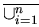
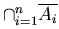

Unit 16 Exercises
1. Use mathematical induction to prove that 3 + 3 * 5 + 3 * 52+ ... + 3 * 5n = 3 (5n+1 - 1)/4 whenever n is a nonnegative integer.
2. Prove that 12 + 32 + 52+ ... + (2n + 1)2 = (n + 1)(2n + 1)(2n+ 3)/3 whenever n is a nonnegative integer.
3. Show that 2n > n2whenever n is an integer greater than 4.
4. Show that any postage that is a positive integer number of cents greater than 7 cents can be formed using just 3-cent stamps and 5-cent stamps.
5. Use mathematical induction to show that 5 divides n5- n whenever n is a nonnegative integer.
6. Use mathematical induction to prove that if A1, A2, ...An are subsets of a universal set U, then
 Ai = 